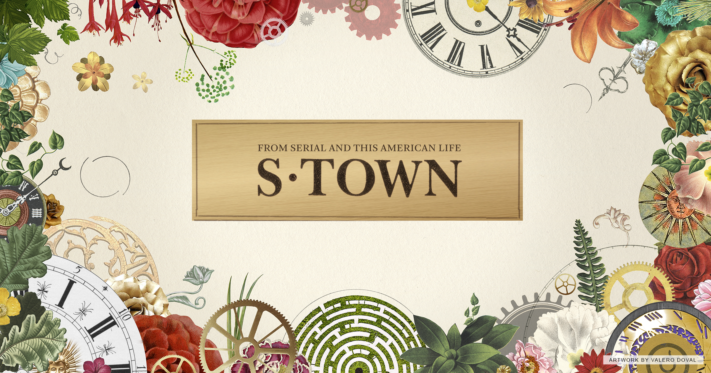

Podcast Summary and Analysis
Serial Podcast
Speaker and Interviews: In this podcast, the main speaker is the journalist, who is supported by multiple interviews and evidence, ultimately forming a cohesive narrative through her lens. Thus, the majority of the podcast's communication through the interviews with people who had first hand accounts of the murder, including all major witnesses. These interviews also take many forms, such as audio from police investigations, phone, and one-on-one interviews.
Structure and Script: Just as how the speakers acted in an informal yet genuine manner, the structure follows suit by acting as more of a conversation than a lecture. But that isn't to say it isn't cohesive; the speakers do a very good job emphasizing key points and keeping a general flow to the podcast, with no lulls or excessive repetition. They would occasionally get off-topic, but it was typically funny and always maintained a quick and lively feel.
Music and Sounds: The music and sounds are even less in this podcast, with only a little music throughout the narrative. No other audio bites were used besides the interviews.

S-town Podcast
Speakers and Interviews: The two main speakers in the narrative are the investigator and John, the informant of the reporter. They share an equal amount of time carrying the story throughout, with John a more active speaker in the interrogation, and the investigator when either reflecting on is doubts about the case or summarizing the information given by John. And while the narrative does follow an interview style, there are no interviews of note that aren't fictitious.
Structure and Script: This podcast is structured much like a mystery television show. However, as solely an audio medium, the creators must capture the style of a murder mystery through it's script and pacing, what with the lack of visual aids. Meanwhile, the script itself is half and half; scripted parts are when the reporter is discussing John with his listeners, giving the murder mystery feel that the podcast needs to be close to a television show. However, the parts where John and the other towns folk give their accounts of the story are unscripted, allowing the listener to achieve and realistic and organic tone that is unique to podcasts.
Music and Sounds: The music and sounds added ultimately enrich the narrative when they do appear. The sound choice throughout is subtle, like background noise, and very realistic, making it easier for the listener to visualize the scene.
Serial Content
This podcast discusses the topic of colors, with the conversation of the podcast jumping from Sir Isaac Newton and his prisms, to how there are shrimps that have sixteen different cones in their eyes, to Tetrachromatic women, and on and on. The hosts, Jad and Robert, often side-track from their narrative in a comical way, but always pull back to focus.
S-town Content
Homecoming is structure almost cinematically, jumping back and forth between the present and five years in the past. The main character, Heidi, is working at Homecoming in the past, and is working as a server being questioned by the DOD in the present.